Bei einer Netzwerkinstallation müssen einige Einstellungen vorgenommen werden. Damit die Eingabe erleichtert wird, gibt es dafür einen eigenen Wizard - den Workstation-Wizard. Zuvor muss jedoch noch gewählt werden, welche Art (Typ) der Installation durchgeführt werden soll.
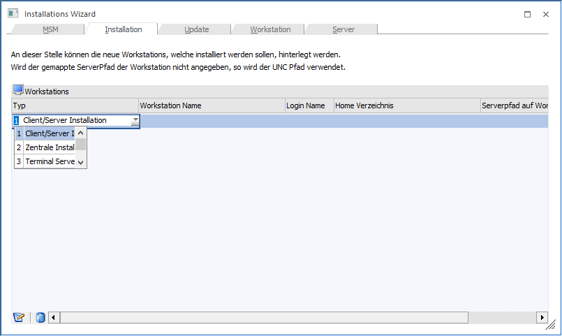
Dabei stehen folgende Möglichkeiten zur Verfügung:
ü Client/Server
Das Programm wird
auf die ausgewählte Workstation (Client) kopiert und installiert. Nur die Daten
werden zentral am Server verwaltet.
ü Zentrale Installation
Bei der
"Zentralen Installation" befinden sich Programme und Daten am Server. Pro Client
(Workstation) gibt es am Server ein eigenes Verzeichnis, in dem die
Konfigurationsdateien gespeichert sind. Auf dem Client müssen nur die
entsprechenden Treiber installiert sein (ODBC), damit das Programm gestartet
werden kann.
ü Terminal Server
Installation
Bei der "Terminal Server"-Installation gibt es ebenfalls für
jeden Client ein eigenes "Home"-Verzeichnis, in dem die
Konfigurationseinstellungen gespeichert sind. Der Unterschied zur Zentralen
Installation besteht darin, dass bei der Terminal-Server-Installation am Client
auch keine Treiber installiert werden müssen.
ü Server Farm Installation
Bei
dieser Form der Installation gibt es mehrere Terminal-Server die im
Loadbalancing-Verfahren eingesetzt werden, wobei die Zuordnung der Sessions
automatisch erfolgt. In diesem Fall müssen die benutzerspezifischen
Einstellungen bzw. Dateien zentral am WinLine Server gespeichert werden.
ü EWL Client
Mit dieser Option
kann ein EWL-Client angelegt werden.
Nun kann der Installations-Wizard durch Anklicken des Buttons
"  Workstation Wizard" aufgerufen
werden.
Workstation Wizard" aufgerufen
werden.
Je nachdem, welche Installationsform gewählt wurde, müssen in den nächsten Fenstern unterschiedliche Informationen eingegeben werden.
Client Server Installation
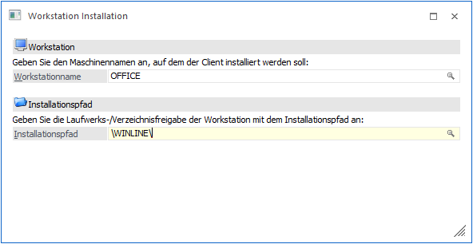
Bei der Client/Server-Installation muss zuerst der Maschinen-Name angegeben werden, auf dem das Programm installiert werden soll. Durch Drücken der F9-Taste kann nach allen Workstations, die derzeit im Netz verfügbar sind, gesucht werden.
Danach muss die Freigabe und das Verzeichnis angegeben werden (sofern das Programm nicht direkt in die Freigabe installiert werden soll). Durch Drücken der F9-Taste kann nach allen Freigaben auf dem zuvor eingetragenen Client gesucht werden.
 Durch
Anklicken des VOR-Buttons gelangt man in das nächste Fenster.
Durch
Anklicken des VOR-Buttons gelangt man in das nächste Fenster.
 Durch
Anklicken des ZURÜCK-Buttons könne die vorherigen Eingaben überarbeitet
werden.
Durch
Anklicken des ZURÜCK-Buttons könne die vorherigen Eingaben überarbeitet
werden.
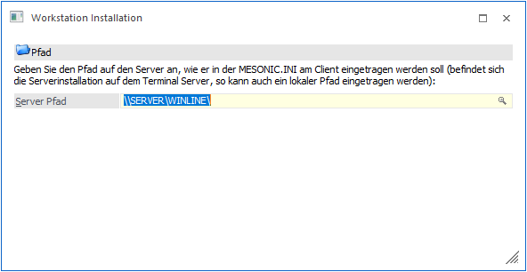
Hier muss der Pfad eingegeben werden, mit dem der installierte Client auf den Server zugreifen soll. Dabei gibt es wieder die Möglichkeit, den UNC-Pfad oder ein gemapptes Verzeichnis zu hinterlegen.
Durch Drücken der F9-Taste wird ein Fenster geöffnet, wo alle Freigaben des Servers angezeigt werden. Hier kann dann die gewünschte Freigabe (für den Zugriff von der WS auf den Server) ausgewählt und mit OK übernommen werden. Über die Matchcode-Funktion kann nur der UNC-Pfad übernommen werden.
Wenn ein gemapptes Verzeichnis hinterlegt werden soll, so muss dies manuell eingetragen werden.
Durch
Anklicken des VOR-Buttons gelangt man in das nächste Fenster.
Durch
Anklicken des ZURÜCK-Buttons könne die vorherigen Eingaben überarbeitet
werden.
In diesem Fenster werden die zuvor eingegebenen Werte nochmals gesammelt angezeigt.
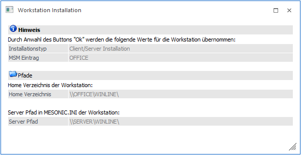
Durch Drücken der F5-Taste wird der Eintrag in die Tabelle übernommen. Durch Anklicken des Zurück-Buttons können die vorherigen Eingaben nochmals überarbeitet werden.
Zentrale Installation
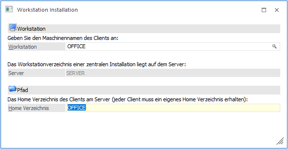
Bei der zentralen Installation liegen die Programme und die Daten am Server. Die einzelnen Clients, die mit dem Programm arbeiten, erhalten am Server ein eigenen Home-Verzeichnis, in dem die benutzerspezifischen Einstellungen gespeichert sind.
Bei der zentralen Installation muss zuerst der Maschinenname eingetragen werden. Durch Drücken der F9-Taste kann nach allen im Netzwerk vorhandenen Computern gesucht werden.
Danach wird angezeigt, welcher Computer als Server eingetragen ist. Auf diesem Computer wird das Home-Verzeichnis angelegt, deren Namen im Feld
Ø Home Verzeichnis
hinterlegt werden kann. Für jeden angelegten Client muss ein eigenes Verzeichnis angelegt werden.
Durch
Anklicken des VOR-Buttons gelangt man in das nächste Fenster.
Durch
Anklicken des ZURÜCK-Buttons könne die vorherigen Eingaben überarbeitet
werden.
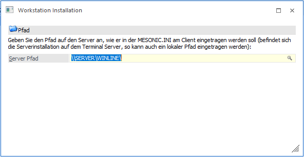
In diesem Fenster muss der Pfad eingetragen werden, mit dem der Client auf den Server zugreifen kann. Dabei gibt es wieder die Möglichkeit, den UNC-Pfad oder ein gemapptes Verzeichnis zu hinterlegen.
Durch Drücken der F9-Taste wird ein Fenster geöffnet, wo alle Freigaben des Servers angezeigt werden. Hier kann dann die gewünschte Freigabe (für den Zugriff von der WS auf den Server) ausgewählt und mit OK übernommen werden. Über die Matchcode-Funktion kann nur der UNC-Pfad übernommen werden.
Wenn ein gemapptes Verzeichnis hinterlegt werden soll, so muss dies manuell eingetragen werden.
Durch
Anklicken des VOR-Buttons gelangt man in das nächste Fenster.
Durch
Anklicken des ZURÜCK-Buttons könne die vorherigen Eingaben überarbeitet
werden.
In diesem Fenster werden die zuvor eingegebenen Werte nochmals gesammelt angezeigt.
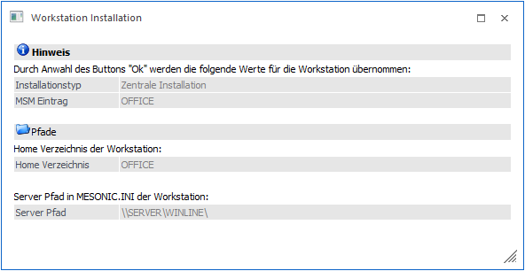
Durch Drücken der F5-Taste wird der Eintrag in die Tabelle übernommen. Durch Anklicken des Zurück-Buttons können die vorherigen Eingaben nochmals überarbeitet werden.
Terminal Server Installation
Beim Terminal Server gibt es pro Benutzer ein eigenes Home-Verzeichnis, in dem alle benutzerspezifischen Einstellungen gespeichert werden. In der MSM-Verwaltung der WinLine muss daher der Servername und das Home-Verzeichnis gemerkt werden, damit mehrere Benutzer auf einem Terminal-Server installiert werden können.
Hinweis zur Terminal-Server (TS) Installation
Grundsätzlich gibt es zwei Arten, eine TS Installation durchzuführen:
ü Terminal-Server == WinLine
Server
In diesem Fall müssen keine Besonderheiten berücksichtigt werden, die
Installation der TS-Benutzer kann normal durchgeführt werden.
ü Terminal-Server <> WinLine
Server
In diesem Fall muss der Terminal-Server zuerst als WinLine-Client
installiert werden (Client/Server-Installation). Erst dann können die
TS-Benutzer angelegt werden, wobei als TS der zuvor installierte Client
angegeben werden.
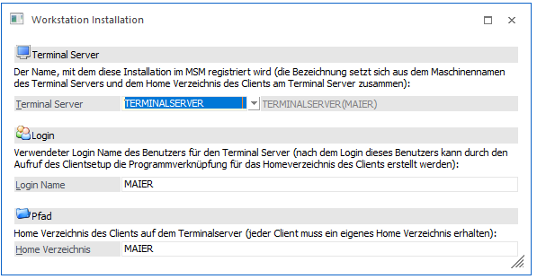
Zuerst muss der Login-Name eingetragen werden. Darunter versteht sich der Login-Name, mit dem sich der Benutzer am Terminal-Server anmelden muss.
Zusätzlich dazu muss ein Home-Verzeichnis angegeben werden, in dem die benutzerspezifischen Dateien des Benutzers enthalten sind. Mit diesem Namen und dem Servernamen wird der MSM-Eintrag gebildet.
Durch
Anklicken des VOR-Buttons gelangt man in das nächste Fenster.
Durch
Anklicken des ZURÜCK-Buttons könne die vorherigen Eingaben überarbeitet
werden.
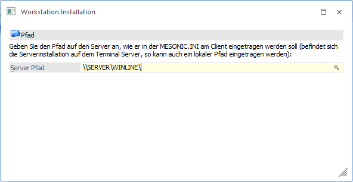
In diesem Fenster muss der Pfad eingetragen werden, mit dem der Client auf den Server zugreifen kann. Dabei gibt es wieder die Möglichkeit, den UNC-Pfad oder ein gemapptes Verzeichnis zu hinterlegen. Wenn der WinLine-Server gleich dem Terminal-Server ist, kann auch ein lokales Verzeichnis angegeben werden.
Durch Drücken der F9-Taste wird ein Fenster geöffnet, wo alle Freigaben des Servers angezeigt werden. Hier kann dann die gewünschte Freigabe (für den Zugriff von der WS auf den Server) ausgewählt und mit OK übernommen werden. Über die Matchcode-Funktion kann nur der UNC-Pfad übernommen werden.
Wenn ein gemapptes oder ein lokales Verzeichnis hinterlegt werden soll, so muss dies manuell eingetragen werden.
Durch
Anklicken des VOR-Buttons gelangt man in das nächste Fenster.
Durch
Anklicken des ZURÜCK-Buttons könne die vorherigen Eingaben überarbeitet
werden.
In diesem Fenster werden die zuvor eingegebenen Werte nochmals gesammelt angezeigt.
Beispiel für eine Zusammenfassung wenn der WinLine-Server gleich dem Terminal-Server ist:
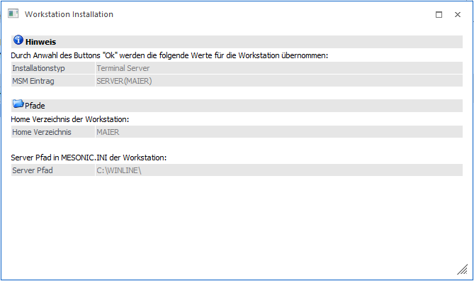
Beispiel für eine Zusammenfassung wenn der WinLine-Server nicht auch der Terminal-Server ist:
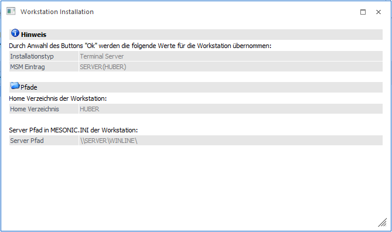
Durch Drücken der F5-Taste wird der Eintrag in die Tabelle übernommen. Durch Anklicken des Zurück-Buttons können die vorherigen Eingaben nochmals überarbeitet werden.
Server Farm Installation
Bei der Server Farm Installation gibt es mehrere Terminal-Server, die im Loadbalancing-Verfahren arbeiten. D.h. wenn sich ein Benutzer anmeldet, wird der nächste freie Terminal-Server verwendet. In diesem Fall sind die einzelnen Terminal-Server jeweils als Client/Server angelegt. Damit aber trotzdem immer die benutzerspezifischen Einträge der einzelnen Benutzer verwendet werden können, müssen die Benutzer-Verzeichnisse zentral abgelegt werden. Für diese Variante gibt es dann die Server Farm Installation.
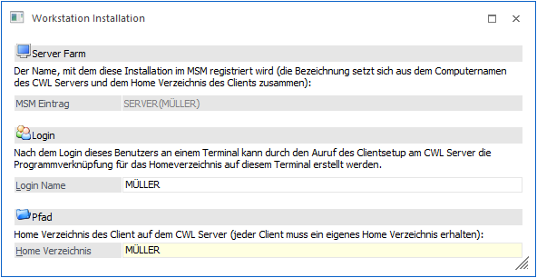
Zuerst muss der Login-Name eingetragen werden. Darunter versteht sich der Login-Name, mit dem sich der Benutzer anmelden muss.
Zusätzlich dazu muss ein Home-Verzeichnis angegeben werden, in dem die benutzerspezifischen Dateien des Benutzers enthalten sind (wobei dieses Verzeichnis am Server angelegt wird). Mit diesem Namen und dem Servernamen wird der MSM-Eintrag gebildet.
Durch
Anklicken des VOR-Buttons gelangt man in das nächste Fenster.
Durch
Anklicken des ZURÜCK-Buttons könne die vorherigen Eingaben überarbeitet
werden.
In diesem Fenster werden die zuvor eingegebenen Werte nochmals gesammelt angezeigt.
Durch Drücken der F5-Taste wird der Eintrag in die Tabelle übernommen. Durch Anklicken des Zurück-Buttons können die vorherigen Eingaben nochmals überarbeitet werden.